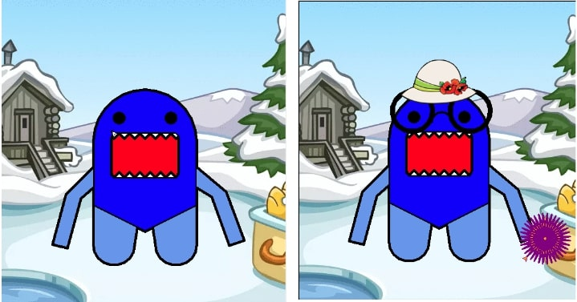

Home
Portfolio
About Me
Behold My Work!

My Website!
1.1.9 Project!

Our project was designed to take user input and allow the user to customize a little creature with clothes and asthetics. We also allowed the user to change the colors of the monster.
We drew the base model of our creature using turtle and through a series of questions the cosmetics were added. This allows for a unique character creating experience.
Cookie Monster Game!

In this project we designed a cookie catching game. The game starts and the user is given control of a glass of milk that can be moved left and rigth using the "a" and "d" keys.
There is a 30 second timer and when the time runs out the game ends. There are 3 types of cookies each worth different point values. Chocolate Chip are worth 1, MnM are worth 3, and Snickerdoodles are worth 5.
Scratch Project
In this project we remixed or created a game on Scratch. I chose to remix a stickman game that involves parkour. There are coins to collect, obstacles to dodge, and the goal is to make it to the end of the level.
pHish Tank Project
In this project were hypothetically hired by a comnpany to debug their automatic fish tank. The tank was supposed to monitor factors such as pH, alkalinity, salinity, temperature as well as levels of calcium, magnesium, and phosphate.

Lightning Simulation Project
In this project we looked at a simulation for the conditions of lightning striking on Netlogo. We were instructed to analyze the simulation and create a presentation on it.
Space Rover Project
In this project were given a single set of data which represented the inputs from 4 sensors on a lost space rover. The space rover was supposedly on an alien planet and using light, sound, temperature sensors, and a gyroscope we had to determine the biome that it was in. We came to the conclusion that the rover was in the Marshlands due to smooth constant temperatures that vary slightly throughout the day, low ambient light during the daytime, constant critter chipping and buzzing, little to no wind.
Project 3.2.4 Making Meaning From Data
Here we were tasked with determining if there is a correlation between honey produced in the USA and the population of bees. We looked at indivdual states based on their tiers of production of honey. We used these graphs to analyze the production of honey and the population